脸型
Paper朱 p02 VRoid 捏脸+妆面贴图
这一集约 33 分钟，没有章节。软件是 VRoid Studio 1.5.0，顶栏是英文 Face、Hairstyle、Body、Outfit、Accessories、Look，工程名 Xiduochuan.vroid。参考图浮在视口上，字幕点明是喜多川海梦。虹膜、眼线、睫毛和妆面都导出到 PaintTool SAI 再拖回来。头发这一集没换。
先对照参考收脸型
眼型先离开全零
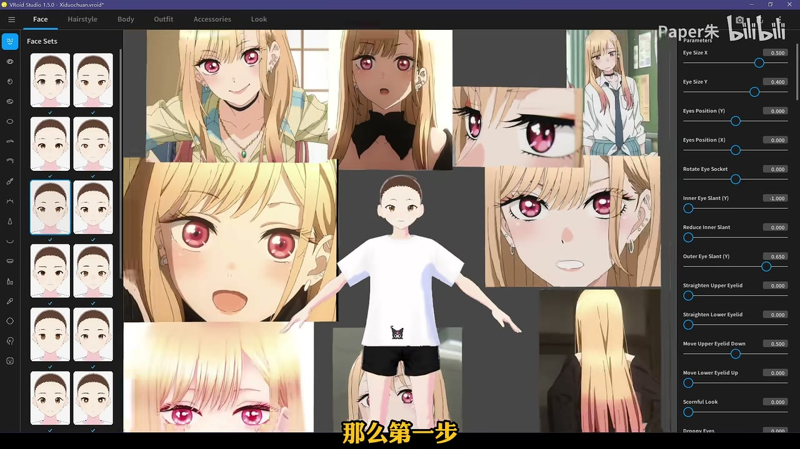
开场几秒这些眼部滑杆还全是 0.000。到这一帧，左侧 Face Sets 已经勾着短发那一版，视口四周贴着参考。读数是 Eye Size X 0.500、Eye Size Y 0.400，Eyes Position 和 Rotate Eye Socket 仍是 0.000。Inner Eye Slant (Y) 拉到最左 -1.000，内眼角压下去；Outer Eye Slant (Y) 0.650，外眼角往上扬。Move Upper Eyelid Down 0.500，上眼皮压低一截。Reduce Inner Slant、两条 Straighten、Move Lower Eyelid Up、Scornful Look、Droopy Eyes 仍是 0.000。眼还是默认的棕色小眼，只是形先变了。
下巴和下颌已经不在默认
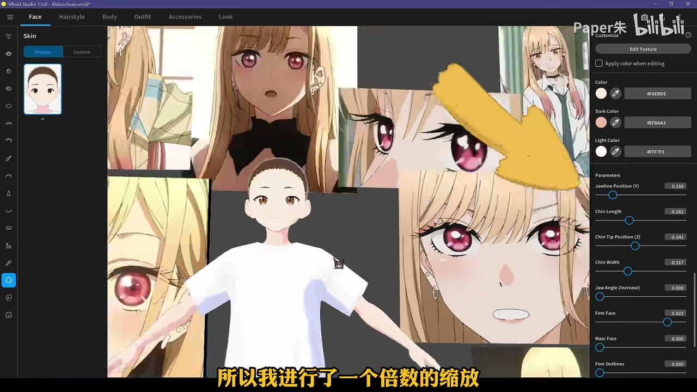
这一下缩放的是浮在画面上的参考图。Apply color when editing 没勾。肤色三格读数是 Color #FAEBDE、Dark Color #EFBAA3、Light Color #FFF7F1。脸型栏已经离开默认：Jawline Position (Y) 0.159，Chin Length -0.282，Chin Tip Position (Z) -0.141，Chin Width -0.317，Jaw Angle (Increase) 0.000，Fem Face 0.822，Masc Face 和 Fem Outlines 都是 0.000。模型还是圆脸短发，女性化主要体现在 Fem Face 被推到右侧。
转到侧面把嘴对一遍
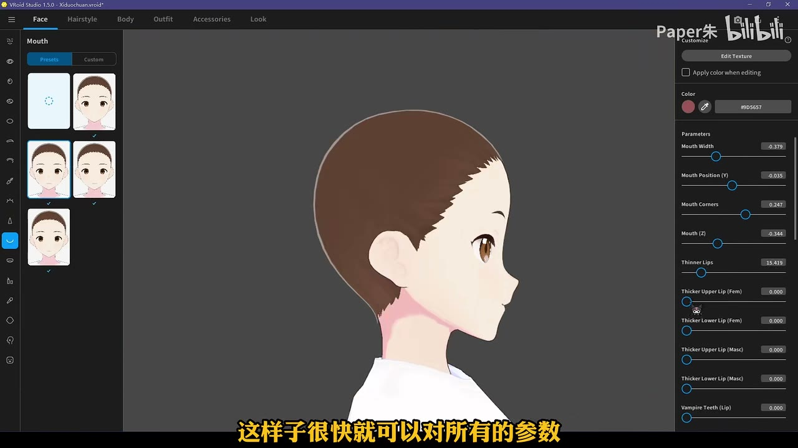
把模型转到正侧面，嘴的前后和嘴角才看得清。Apply color when editing 仍没勾，嘴色是 #9D5657。这一帧 Mouth Width -0.379，嘴比默认窄；Mouth Position (Y) -0.035，几乎贴着中线；Mouth Corners 0.247，嘴角往上；Mouth (Z) -0.344，嘴略往脸上收。Thinner Lips 是 15.419，嘴唇被收薄。Thicker Upper Lip 和 Thicker Lower Lip 的女性和男性四条，以及 Vampire Teeth (Lip)，都是 0.000。画面上没有 Shark Teeth、Front Teeth Fang 这些名字。
虹膜拿到 SAI 里重画
导出后用顺手的 SAI
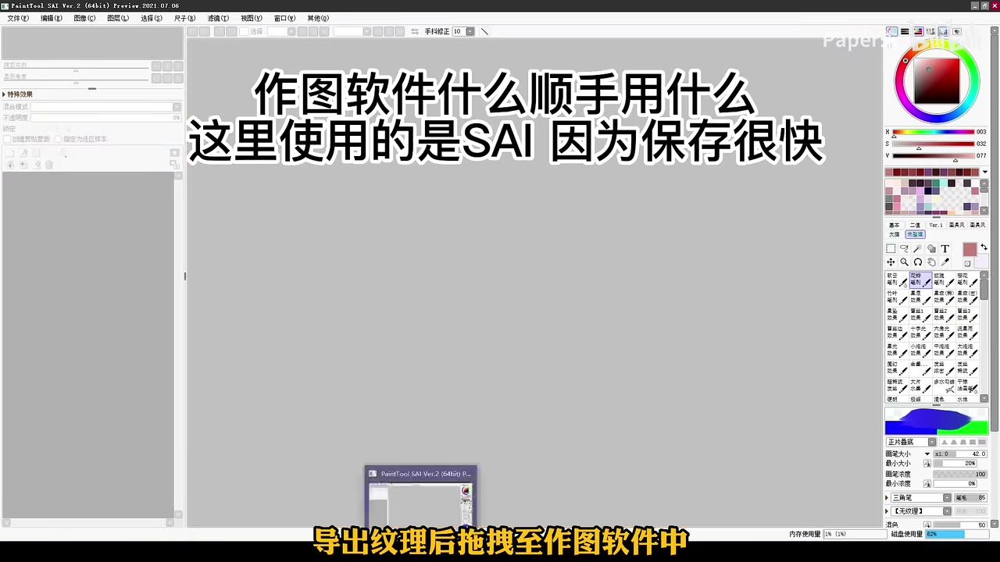
虹膜不在 VRoid 里从零描。先导出纹理，再拖进 SAI。这一帧画布还是空的，只留下这句说明，底下有一个很小的 SAI 预览窗。后面的图层、混合模式都在 SAI 的中文界面里。
只重画一侧，拿默认瞳做对照
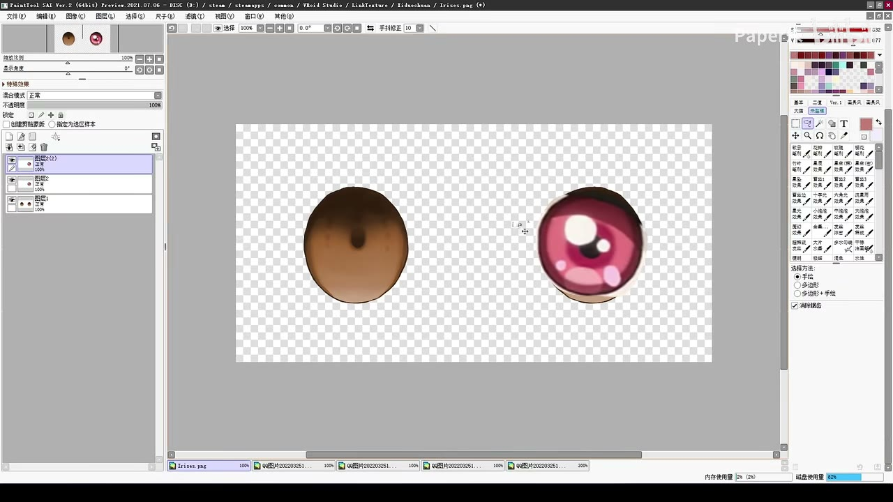
左右眼分开画。左边留着导出的棕色默认虹膜，右边在新图层上铺粉红、深色瞳孔和两块高光。混合模式停在正常，不透明度 100%，没有改成叠加。这样能直接比大小和位置，不必靠记忆。
对着参考把像素收干净
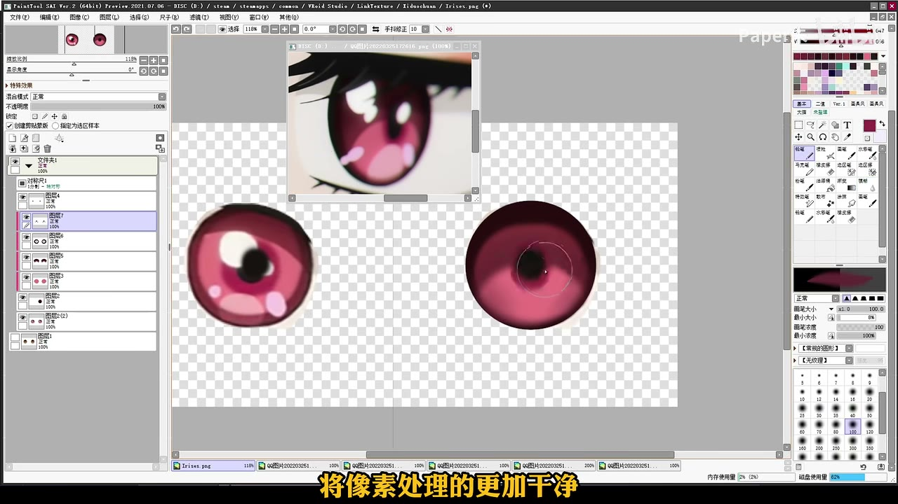
参考眼缩成小窗压在画布上沿。先在该有的位置铺圆底，再收高光和瞳孔边缘。这一帧左眼的黑瞳、粉环和两块高光已经分开，右眼还在用圆形选区修瞳孔。图层堆到了图层 7，当前图层不透明度仍是 100%。画完的眼睛比默认虹膜更大、更亮，边缘没有灰边。
画面上点了 XYTool
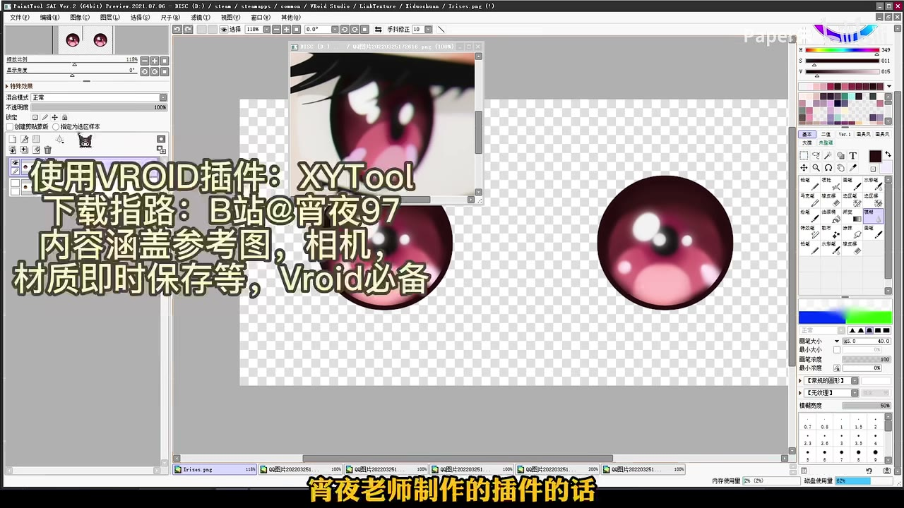
视口上那些能拖、能缩放的参考图，画面说明来自 XYTool，不是 VRoid 自己的面板。字写明还包括相机和材质即时保存。这一帧右边那只虹膜已经是完整的粉瞳，左边被说明字挡住。插件本身的窗口这一下没有打开。
眼线、眼皮和睫毛
粉瞳回到脸上，眼线先起一笔
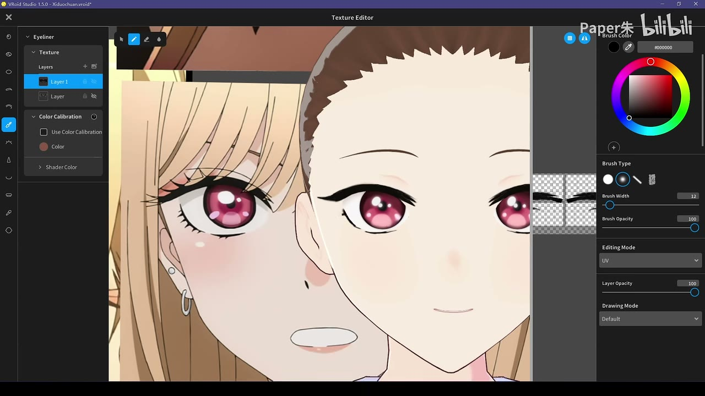
回到 VRoid 的贴图编辑器，虹膜已经换成粉色。眼线页有 Layer 1 和下面一张 Layer，先选 Layer 1。实心圆笔刷，宽 12，不透明度 100。UV 上先出现两小段黑线，预览里上眼线刚有一点。参考脸贴在模型左侧，用来对眼线弧度。字幕在更早一帧说过没有手绘板用鼠标也可以，这一帧没有再出现那句。
眼线画到一半，回头把眼睛放大
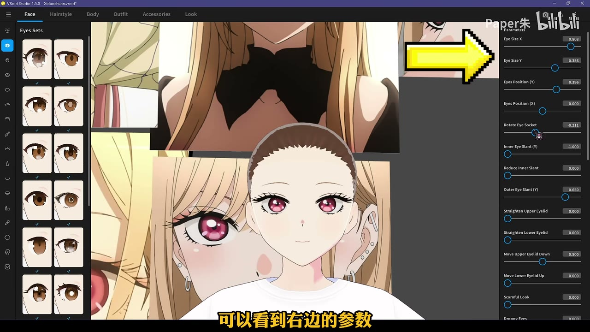
贴图还没画完，就退出编辑器改形。和 0:25 那帧比，Eye Size X 从 0.500 加到 0.808，眼睛更宽；Eye Size Y 从 0.400 收到 0.356，略扁。Eyes Position (Y) 从 0 到 0.396，眼往上移。Rotate Eye Socket -0.211，眼窝略转。Inner Eye Slant (Y) 仍是 -1.000，Outer Eye Slant (Y) 仍是 0.650，Move Upper Eyelid Down 仍是 0.500。Eyes Position (X)、两条 Straighten 仍是 0.000。脸上的粉瞳和一点眼线跟着眼睛一起变大。
上下眼线在同一层铺开
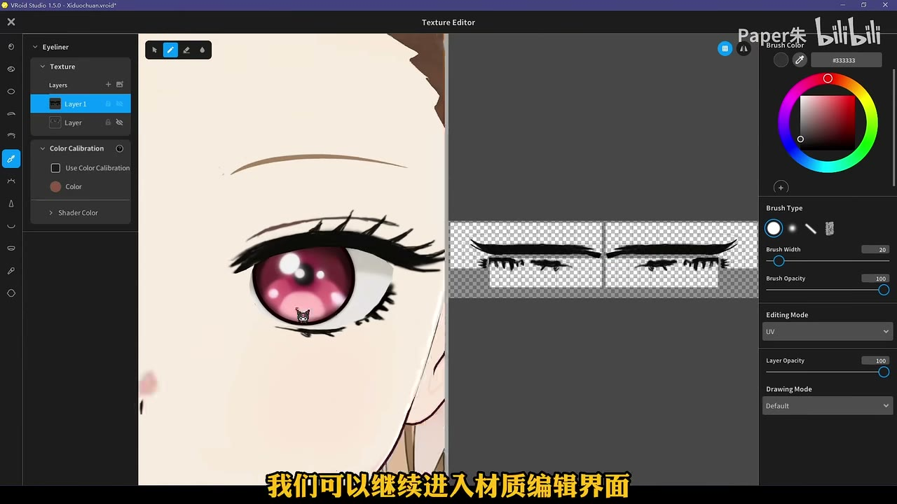
笔宽加到 20，仍是最左边的实心圆。UV 上上下眼线都画出来了：上缘是一条外眼角上扬的弧，下缘是几簇短线。预览里左眼的眼线已经连上睫毛根。Use Color Calibration 还是没勾，颜色直接用笔刷的黑。下面那张叫 Layer 的图层这一帧没被选中。
眼角单独留一层去拉
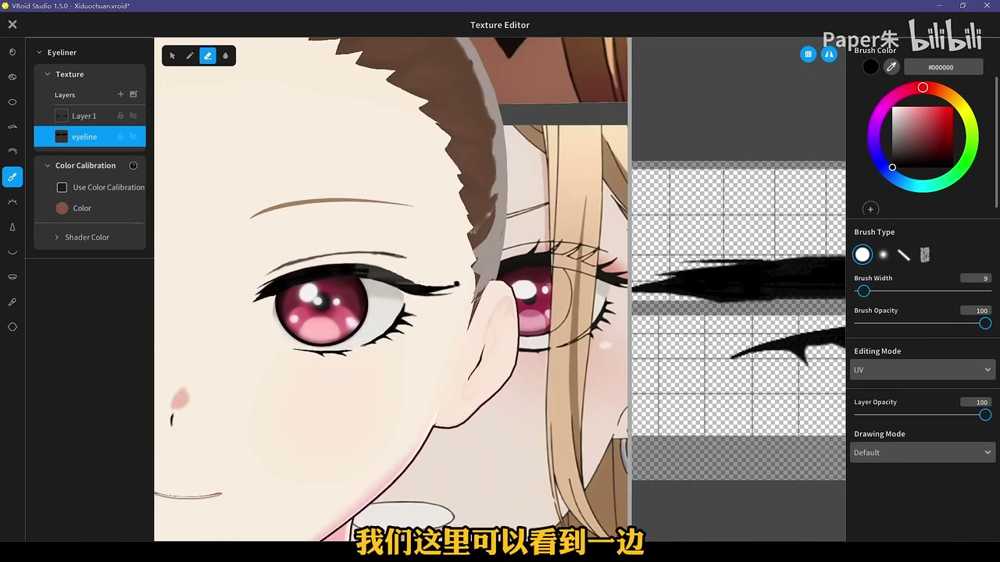
中间在 SAI 里把眼线拉长、修弯，再导回来。图层改名为 eyeline。这一帧笔宽收到 9，UV 右下是一条单独的眼角，又黑又长，还没跟主眼线合成一条。预览里模型的上眼线已经贴着眼皮，外眼角比参考略短。网格开着，方便看这一笔落在眼角的哪一格。
眼皮勾上色彩校正，再描一条细线
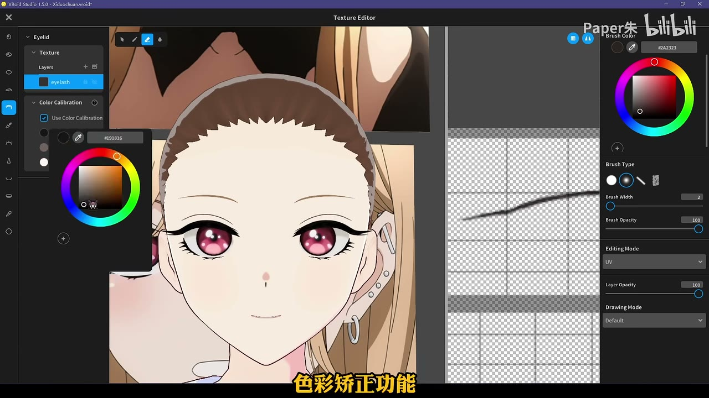
换到 Eyelid。这里把 Use Color Calibration 勾上，和眼线那一页相反。校正色是很深的棕 #191816。笔刷收到 2，在 UV 上画一条细弧，脸上就多出一条贴着上眼皮的浅线，不是再加一圈黑眼线。图层名写成了 eyelash，实际画的是眼皮上的这条线。
睫毛另开图层，收成尖簇
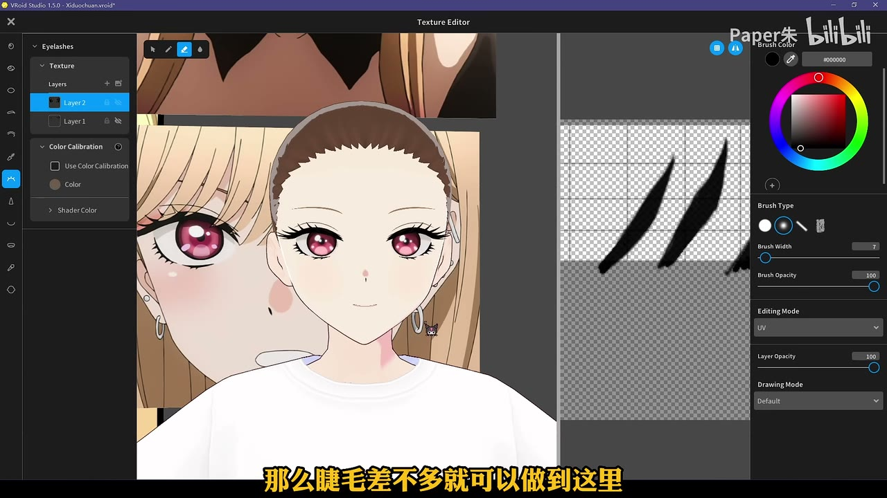
睫毛不画在眼线层上。Eyelashes 里先有 Layer 1 的草稿尖簇，这一帧选的是 Layer 2。实心笔宽 7，UV 上是两根上尖下宽的黑簇。预览里睫毛已经是整排，外眼角更长，和参考并排能对上长度。Use Color Calibration 没勾。
妆面贴到脸上
把脸的 UV 存成 guide.png
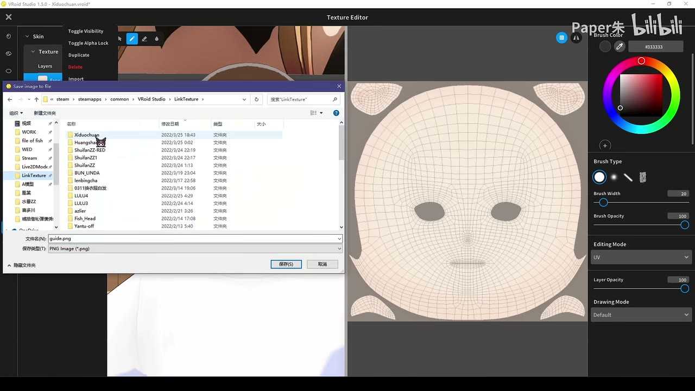
妆面不在默认皮肤上硬画。先在 Skin 的贴图编辑器里看到带耳朵、眼洞和嘴洞的 UV，再存成 guide.png，类型是 PNG。保存框开着的同时，图层右键菜单也开着。后面 SAI 的标签是 face.png 和 guide.png，网格就是从这张引导来的。
在 SAI 里点眼角和唇线
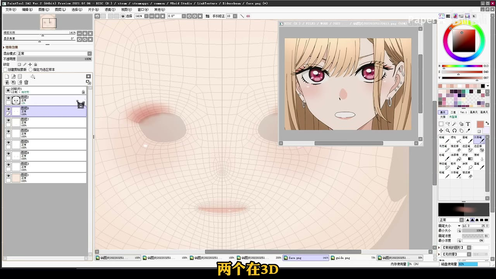
把 guide 垫在下面，对着右上的参考吸色。这一帧能看清的是眼洞外缘一块淡红，和嘴洞下方一条横的淡红，都还很透。图层叠了多层，当前是图层 8，混合模式仍是正常。字幕说的是嘴唇阴影的位置，画面上那条线就贴在嘴的下沿，没有铺满整张嘴。
导回以后用很透的笔描眼窝
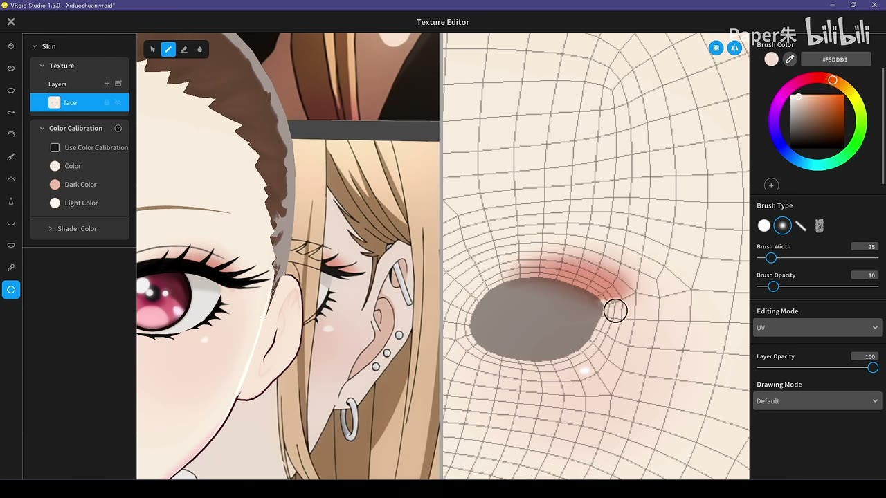
导回 VRoid 后图层改名叫 face，色彩校正关着，直接画在层上。柔边笔宽 25，不透明度只有 10，沿眼洞外圈扫一圈淡粉，硬边会散开，不会在眼周切出一条线。这一帧模型眼下已经有腮红，抽出的画面没有停在往脸颊铺色的那一笔，能看清的操作是眼窝这一圈。
眉毛，以及这一集停在哪
眉毛在 Layer 2 上修边
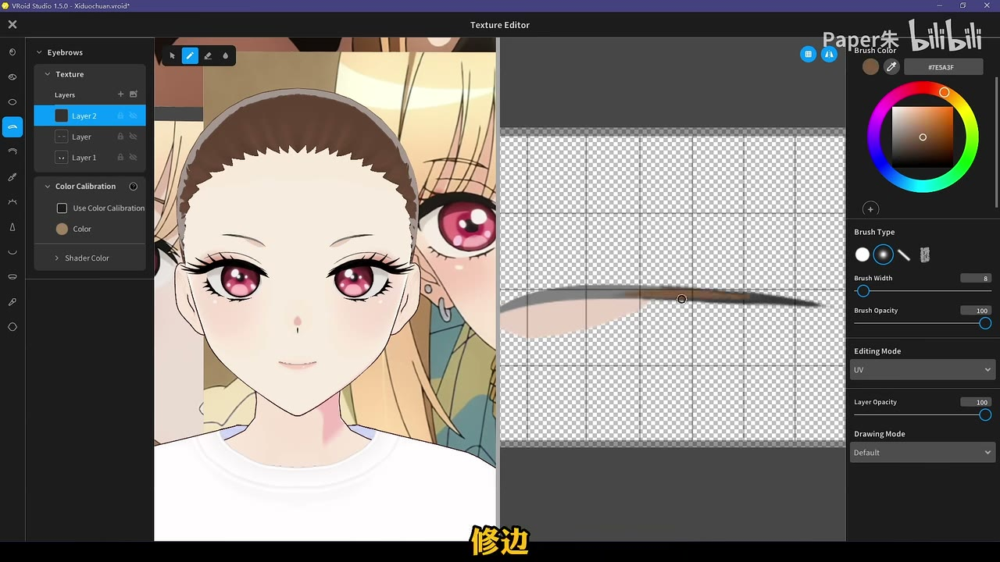
眉毛单独一页。Layer 2 上用棕色 #7E5A3F，笔宽 8，顺着已有的浅色眉形描深色的上缘，两头收尖。Use Color Calibration 没勾。到这一帧，粉瞳、眼线、睫毛、眼下腮红都还在，眉是最后一块贴图。
头发还没换，先和参考并排
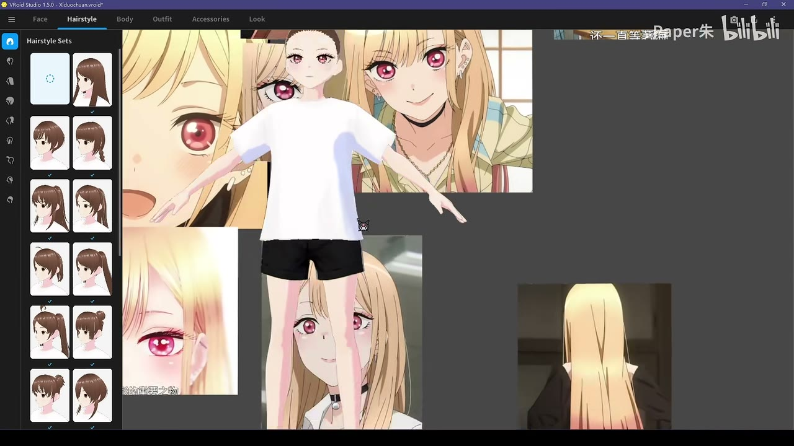
贴图告一段落就切到 Hairstyle。左侧发型预设还是默认短发，没有点下去换。脸已经是这一集的结果：眼比开头大、瞳是粉色、眼线睫毛和淡腮红都在。头发、衣服留到后面的分 P。